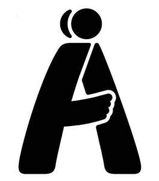

Trade Mark Journal No.2025/040 3 October 2025
UK00004267722 22 September 2025 (9,28,35,36,41,44,45)
Mark 1
Mark 2
Mark 3

- Class 9
- Downloadable electronic greeting cards; digital greeting cards (ecards); downloadable electronic media; downloadable electronic publications.
- Class 28
- Toys, games and playthings; fidget toys.
- Class 35
- Retail services connected with the sale of precious metal goods, namely jewellery, costume jewellery, precious stones, watches, cufflinks, tie clips, tie pins, brooches, medals and medallions, key rings [trinkets or fob], key chains, key fobs, rings, bracelets, badges, lapel badges, lapel pins, ornamental pins, charity bands, coins, trophies, decorative objects of or coated with precious metal, clocks and chronographic instruments, figurines made of metal, statues of precious metal of religious icons, charity bracelets, parts, fittings and cases for all the aforesaid goods; retail services connected with the sale of jewellery, metal key rings and key chains, musical instruments and parts, fittings and accessories, printed matter and publications, greetings cards, stationery, teaching materials, bags, luggage; retail services connected with the sale of leather goods, namely belts, belts with load carrying pouches, key pouches, leather key holders, luggage, suitcases, travel bags, luggage trolleys, bags, handbags, pouches, briefcases, backpacks, wallets, purses, card holders, licence holders, document wallets, card cases, travel wallets, travel pass holders, boxes, trunks, cases, rucksacks, backpacks, holdalls, haversacks, figurines of leather, kit bags, sports bags, leather wristbands; retail services connected with the sale of umbrellas, walking sticks, parasols, furniture and furnishings, tableware, cookware, containers and kitchen utensils, textile goods, clothing, footwear and headgear, toys, games and playthings, food products, alcoholic and non-alcoholic beverages.
- Class 36
- Charitable fundraising; charitable fundraising services for people with learning disabilities, autism and autism spectrum disorder or social, emotional and mental health difficulties (SEMH) needs; organising of charitable collections; investment of funds for charitable purposes; management and monitoring of funds and payment of funds to charity; financial arrangements to facilitate charitable giving; monetary collection services.
- Class 41
- Education; providing of training; teaching services; development of educational and training material; provision and publication of instruction, teaching and training material; publication of texts, books, textbooks, brochures, magazines, journals and newspapers; online publication of electronic texts, books, textbooks, brochures, magazines, journals and newspapers; publication of electronic texts, books, textbooks, brochures, magazines, journals and newspapers, all being downloadable from an on-line database or from a global computer network; all of the aforesaid services being directed towards people with Autism or autism spectrum disorder or social, emotional and mental health difficulties (SEMH) or persons connected with the provision of such services towards people with Autism or autism spectrum disorder or social, emotional and mental health difficulties (SEMH).
- Class 44
- Provision of Supported Living Services for people with Autism or autism spectrum disorder or social, emotional and mental health difficulties (SEMH); Healthcare Consultancy and Advisory Services; Provision of health care services.
- Class 45
- Social and personal care support services for people with learning disabilities, autism and autism spectrum disorder or social, emotional and mental health difficulties (SEMH) needs enabling them to access day activities and gain work-related skills.
Autism Together
Representative: J A Kemp LLP